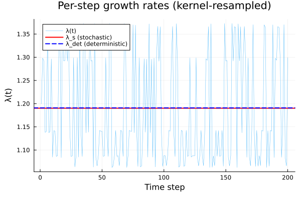
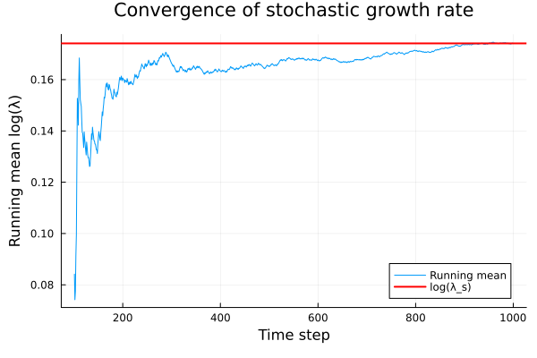
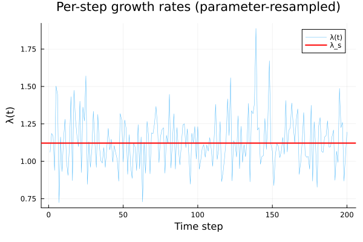
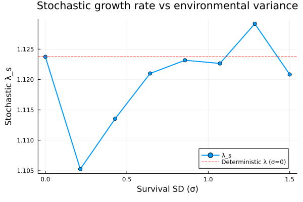

Stochastic IPMs
Overview
In stochastic IPMs, the environment varies over time, causing the projection kernel to change at each time step. There are two main approaches:
- Kernel-resampled: pre-compute a set of kernels (e.g., one per observed year) and randomly sample from them each time step
- Parameter-resampled: sample environmental parameters each time step and build a new kernel
The stochastic growth rate is the geometric mean of per-step growth rates:
$
\log \lambdas = \lim{T \to \infty} \frac{1}{T} \sum{t=1}^{T} \log \lambdat $
A key result is that $\lambda_s \leq \lambda_{\text{det}}$ — environmental stochasticity always reduces long-term growth relative to the deterministic case (Tuljapurkar's inequality).
Setup
using IntegralProjectionModels
using Distributions
using LinearAlgebra
using Statistics
using Random
using PlotsPart 1: Kernel-Resampled Stochastic IPM
We build 5 year-specific kernels for a monocarpic perennial, each with different random intercepts for survival, growth, and fecundity. This follows the ipmr test case from test-simple_di_stoch_kern.R.
Parameters
# Fixed parameters
s_int = 1.03; s_slope = 2.2
g_int = 8.0; g_slope = 0.92; sd_g = 0.9
f_r_int = 0.09; f_r_slope = 0.05
f_s_int = 0.1; f_s_slope = 0.005
mu_fd = 9.0; sd_fd = 2.0
# Year-specific random intercepts
Random.seed!(50127)
g_r = randn(5) .* 0.3 # growth random intercepts
s_r = randn(5) .* 0.7 # survival random intercepts
f_s_r = randn(5) .* 0.2 # fecundity random intercepts
# Domain
L_stoch = 0.2; U_stoch = 40.0; n_stoch = 100
domain_stoch = ContinuousDomain(L_stoch, U_stoch, n_stoch)
z_stoch = meshpoints(domain_stoch)
h_stoch = step_size(domain_stoch)0.39799999999999996Vital Rate Functions
# Flowering probability
f_r(z) = 1.0 / (1.0 + exp(-(f_r_int + f_r_slope * z)))
# Survival × (1 - flowering) for year i
function surv_yr(z, s_r_i)
s = 1.0 / (1.0 + exp(-(s_int + s_slope * z + s_r_i)))
return s * (1.0 - f_r(z))
end
# Growth for year i (with truncated distributions correction)
function growth_yr(z_prime, z, g_r_i)
mu = g_int + g_slope * z + g_r_i
d = Normal(mu, sd_g)
ev = cdf(d, U_stoch) - cdf(d, L_stoch)
return ev > 0 ? pdf(d, z_prime) / ev : pdf(d, z_prime)
end
# Offspring size (with truncated distributions correction)
function f_d(z_prime)
d = Normal(mu_fd, sd_fd)
ev = cdf(d, U_stoch) - cdf(d, L_stoch)
return ev > 0 ? pdf(d, z_prime) / ev : pdf(d, z_prime)
end
# Fecundity for year i
function fec_yr(z_prime, z, f_s_r_i)
return f_r(z) * exp(f_s_int + f_s_slope * z + f_s_r_i) * f_d(z_prime)
endfec_yr (generic function with 1 method)Build Year-Specific Kernels
kernels_stoch = []
for i in 1:5
P_i = PKernel(
CustomVitalRate(z -> surv_yr(z, s_r[i])),
CustomVitalRate((z_prime, z) -> growth_yr(z_prime, z, g_r[i])),
domain_stoch
)
F_i = FKernel(
CustomVitalRate((z_prime, z) -> fec_yr(z_prime, z, f_s_r[i])),
domain_stoch
)
push!(kernels_stoch, P_i + F_i)
end
# Deterministic lambdas for each year
det_lambdas = Float64[]
for (i, k) in enumerate(kernels_stoch)
K_i = materialize(k)
e = eigen(K_i)
λ_i = real(e.values[argmax(real.(e.values))])
push!(det_lambdas, λ_i)
println("Year $i: λ = ", round(λ_i, digits=4))
endYear 1: λ = 1.364
Year 2: λ = 1.0878
Year 3: λ = 1.293
Year 4: λ = 1.1406
Year 5: λ = 1.0665Deterministic Lambda (Average Kernel)
K_matrices = [materialize(k) for k in kernels_stoch]
K_mean = mean(K_matrices)
e_mean = eigen(K_mean)
λ_det = real(e_mean.values[argmax(real.(e_mean.values))])1.1908790553127695println("Deterministic λ (mean kernel): ", round(λ_det, digits=6))Deterministic λ (mean kernel): 1.190879Stochastic Simulation
Random.seed!(42)
n0_stoch = uniform_population(domain_stoch)
prob_stoch = IPMProblem(
StochasticKernelResampled(),
kernels_stoch,
domain_stoch,
n0_stoch,
(0, 1000);
normalize=true
)
sol_stoch = solve(prob_stoch)IPMSolution{Vector{Int64}, Vector{Vector{Float64}}, Vector{AbstractMatrix}, Nothing}([0, 1, 2, 3, 4, 5, 6, 7, 8, 9 … 991, 992, 993, 994, 995, 996, 997, 998, 999, 1000], [[0.01, 0.01, 0.01, 0.01, 0.01, 0.01, 0.01, 0.01, 0.01, 0.01 … 0.01, 0.01, 0.01, 0.01, 0.01, 0.01, 0.01, 0.01, 0.01, 0.01], [5.973636740856514e-6, 1.3781883106035616e-5, 3.056186259588214e-5, 6.514072380156739e-5, 0.00013345254030581454, 0.00026278623625466144, 0.0004973703482475841, 0.0009048126899946331, 0.001582118698441982, 0.0026590188258046443 … 0.0014977724028956713, 0.0014747298576932306, 0.0014574620225955024, 0.001452353083074264, 0.001472480789022553, 0.0015456171276496669, 0.0017378148673906253, 0.002241563073041112, 0.0037852949489396116, 0.009820161136224498], [5.644865355257854e-6, 1.302336882043452e-5, 2.887982762320863e-5, 6.15555700746837e-5, 0.00012610770523675442, 0.00024832325507108405, 0.0004699965457848761, 0.0008550144294098278, 0.0014950431456809926, 0.0025126703372753967 … 0.0002667935000537186, 0.0002578068666061927, 0.00024995731273750135, 0.0002441911570126174, 0.0002424115287045027, 0.0002485847840076405, 0.0002721783151965183, 0.00034372024744820103, 0.0006158110504259096, 0.0021328434049397104], [5.61197670242366e-6, 1.2947490827088249e-5, 2.8711565217493957e-5, 6.119692914229873e-5, 0.0001253729644987161, 0.00024687645044197196, 0.0004672582070903292, 0.0008500328628053608, 0.0014863325827288389, 0.002498030777664576 … 6.171044537737562e-5, 5.8523960750208504e-5, 5.5665527441495214e-5, 5.3312822730460284e-5, 5.1820016410187115e-5, 5.191101855001641e-5, 5.527241352996096e-5, 6.727082285606025e-5, 0.00011534607949390497, 0.0003957127523788534], [5.343193356264488e-6, 1.2327376009546848e-5, 2.7336436455948586e-5, 5.8265927061974976e-5, 0.00011936827725521869, 0.00023505240305974029, 0.00044487906493113384, 0.0008093208838965075, 0.0014151452871446273, 0.002378388608911738 … 2.2705431639030017e-5, 2.029652747469179e-5, 1.849073598293781e-5, 1.7130566156624488e-5, 1.6190312323794085e-5, 1.5792924812664628e-5, 1.6334177953187464e-5, 1.9108377283772817e-5, 3.0394395643493157e-5, 9.254608012538626e-5], [5.370170843787812e-6, 1.2389616248729468e-5, 2.7474456610610943e-5, 5.856010850283682e-5, 0.00011997096108034297, 0.00023623916963321854, 0.00044712523470693524, 0.0008134071002441143, 0.0014222902773587435, 0.0023903969611971713 … 9.091294036990754e-5, 7.73462139745124e-5, 6.408677136704283e-5, 5.178755023632375e-5, 4.098179263235141e-5, 3.203334660279934e-5, 2.5172579903321505e-5, 2.0717374441085395e-5, 2.023851299753029e-5, 3.454990652486607e-5], [5.754535641304684e-6, 1.3276391079415437e-5, 2.944091433778729e-5, 6.275149177573528e-5, 0.00012855776688316053, 0.0002531477602987881, 0.00047912779203788117, 0.0008716259287525824, 0.001524089331931793, 0.002561487318175858 … 7.587371724129626e-5, 6.487010026272665e-5, 5.460417442210203e-5, 4.558639153519979e-5, 3.822949966944311e-5, 3.2870567630700116e-5, 2.99107148390159e-5, 3.021038261233847e-5, 3.637422788286726e-5, 5.8185758118911547e-5], [5.332951075335776e-6, 1.2303745861845831e-5, 2.7284035683020644e-5, 5.8154238048729565e-5, 0.00011913946213510137, 0.00023460183490983956, 0.00044402628344667773, 0.000807769509784038, 0.001412432618039077, 0.0023738295143363834 … 8.477722812656826e-5, 7.22850017335992e-5, 6.062454664422112e-5, 5.037882811188412e-5, 4.200034506206289e-5, 3.5840572513795766e-5, 3.2308295085738325e-5, 3.2339010995647064e-5, 3.916689890826348e-5, 6.738259163167311e-5], [5.368517009702514e-6, 1.2385800658825175e-5, 2.746599539137987e-5, 5.854207393628434e-5, 0.0001199340140128377, 0.000236166415822886, 0.0004469875349995933, 0.0008131565978994191, 0.0014218522592378147, 0.0023896607983991533 … 8.188569275988012e-5, 7.018400134602804e-5, 5.9315571308261824e-5, 4.9826252535521934e-5, 4.214996503264112e-5, 3.664587739169691e-5, 3.3770929005230196e-5, 3.458936259108977e-5, 4.271073765612768e-5, 7.427688542729204e-5], [5.647032375563234e-6, 1.3028368391354686e-5, 2.8890914366458776e-5, 6.157920078363176e-5, 0.00012615611701289307, 0.00024841858445489467, 0.00047017697383649115, 0.0008553426628584045, 0.0014956170812052926, 0.0025136349318716843 … 7.454649857397094e-5, 6.377865868142188e-5, 5.379557966057481e-5, 4.5045760716917606e-5, 3.790869207907023e-5, 3.271015185345319e-5, 2.986319669511674e-5, 3.032149680088932e-5, 3.738097857918655e-5, 6.633930872257226e-5] … [5.3883138024351975e-6, 1.243147418990051e-5, 2.7567278225536365e-5, 5.8757952045967764e-5, 0.00012037627931864169, 0.00023703729647316622, 0.0004486358336951549, 0.0008161551713591765, 0.001427095441734771, 0.002398472844426231 … 8.946049879095177e-5, 7.698884322653858e-5, 6.521137575984094e-5, 5.476095293820402e-5, 4.6183939464886915e-5, 3.9964056044515646e-5, 3.6713233891934824e-5, 3.779480061619418e-5, 4.780271316031768e-5, 8.76143691849268e-5], [5.213418962811517e-6, 1.2027971208365551e-5, 2.6672494647427447e-5, 5.685077607654822e-5, 0.00011646908481626736, 0.0002293434981028777, 0.0004340739326876821, 0.0007896642628665961, 0.0013807745260753102, 0.0023206227884779696 … 0.00010440793840430946, 9.021921613930278e-5, 7.67308657930467e-5, 6.457425253901549e-5, 5.4357101960301145e-5, 4.664570599478184e-5, 4.212790552515115e-5, 4.222589072012423e-5, 5.162994893823823e-5, 9.23226163795048e-5], [5.772135099615727e-6, 1.3316995101336187e-5, 2.9530955337934656e-5, 6.294340861009035e-5, 0.00012895094318787913, 0.00025392197801705373, 0.00048059313870124995, 0.000874291677154576, 0.0015287505501883779, 0.002569321275836962 … 0.0001051906297188027, 9.10117930962426e-5, 7.716304675809657e-5, 6.446201933522482e-5, 5.3610663809405484e-5, 4.518780339890408e-5, 3.979676884679851e-5, 3.8584493966702904e-5, 4.529007010795456e-5, 7.679729920436107e-5], [5.171337720312651e-6, 1.1930884828621447e-5, 2.6457201818802976e-5, 5.6391892700515874e-5, 0.00011552897932374223, 0.0002274923022891445, 0.0004305702107436109, 0.000783290316408088, 0.001369629304861723, 0.002301891378155179 … 9.866838192464755e-5, 8.576262353218285e-5, 7.340690432434342e-5, 6.229590760427643e-5, 5.3079040565234214e-5, 4.637437052492846e-5, 4.2977740837590484e-5, 4.457121430760336e-5, 5.647750510988734e-5, 0.00010188187480700373], [5.275095508239773e-6, 1.2170266258491814e-5, 2.698803946351485e-5, 5.752334037616201e-5, 0.00011784695428194715, 0.0002320567108295422, 0.00043920917710560744, 0.0007990062635968669, 0.0013971095651513143, 0.002348076556266661 … 0.00011311412000507708, 9.945724750260536e-5, 8.576193755746769e-5, 7.288177265080584e-5, 6.165466226538113e-5, 5.287290565523091e-5, 4.745213919251916e-5, 4.712136732357131e-5, 5.73707950011658e-5, 0.0001041688084089062], [5.771586230516399e-6, 1.331572879571775e-5, 2.952814725590281e-5, 6.29374233565583e-5, 0.00012893868131479, 0.00025389783271813723, 0.00048054743936842246, 0.0008742085412481716, 0.0015286051821574366, 0.0025690769605543687 … 8.125453791061735e-5, 7.02144082742093e-5, 5.9785941538172675e-5, 5.0458527880426386e-5, 4.271097182686857e-5, 3.700705975540679e-5, 3.394878471622305e-5, 3.48372617870029e-5, 4.395348345130271e-5, 8.040763697417328e-5], [5.610933983410926e-6, 1.2945085151589488e-5, 2.8706230538373743e-5, 6.118555860301803e-5, 0.00012534966989492542, 0.00024683058019298195, 0.00046717138937134767, 0.0008498749246183596, 0.0014860564184992191, 0.0024975666374681973 … 9.394473786891387e-5, 8.178137564913861e-5, 6.970140860231765e-5, 5.8437799750836305e-5, 4.8652225415089285e-5, 4.091098302477203e-5, 3.5799416874656445e-5, 3.4372202888016286e-5, 4.0010585926260416e-5, 6.848406211255829e-5], [5.619047690477655e-6, 1.296380442884073e-5, 2.87477412647995e-5, 6.127403615429323e-5, 0.00012553093214207457, 0.00024718751025644555, 0.00046784694388943315, 0.0008511038886731686, 0.0014882053346105355, 0.002501178250764959 … 6.896553653773444e-5, 6.015134492747665e-5, 5.160451306897993e-5, 4.3859912735682256e-5, 3.7405504501113796e-5, 3.2696611592415804e-5, 3.030698938529627e-5, 3.143215087236119e-5, 3.9831555196717924e-5, 7.165228127459923e-5], [5.3441886452401065e-6, 1.2329672258367085e-5, 2.7341528477146994e-5, 5.827678039087256e-5, 0.00011939051226010606, 0.00023509618681410952, 0.00044496193358276124, 0.0008094716379680696, 0.0014154088895282145, 0.0023788316368576817 … 6.492435010436873e-5, 5.5527091503500705e-5, 4.679166571030359e-5, 3.9117803126338605e-5, 3.285577815309278e-5, 2.8317421021427242e-5, 2.590695406521264e-5, 2.6561634583402206e-5, 3.355963193353342e-5, 6.233631073870814e-5], [5.370069719469716e-6, 1.238938294302448e-5, 2.747393924612281e-5, 5.8559005772362805e-5, 0.00011996870193776007, 0.00023623472107364154, 0.0004471168150056303, 0.0008133917831823829, 0.0014222634945731838, 0.0023903519482419817 … 8.486886549182445e-5, 7.27314158520511e-5, 6.117323330384906e-5, 5.077700517126522e-5, 4.20316564339846e-5, 3.5328208515078947e-5, 3.107737754129947e-5, 3.0110324944546014e-5, 3.5267398023439545e-5, 5.9864479020410016e-5]], AbstractMatrix[[4.615517524563303e-6 4.668175066785423e-6 … 9.432692075096491e-6 9.472578009074108e-6; 1.064854221256241e-5 1.0770029360661351e-5 … 2.1762330920638937e-5 2.185435246521912e-5; … ; 3.166691268982724e-52 3.2028194340942317e-52 … 0.00845647576275921 0.006846909494520593; 1.5073804938086166e-53 1.5245779048412613e-53 … 0.08436352968387643 0.08177043281587847], [5.514131444428574e-6 5.577041098180222e-6 … 1.1269181343174811e-5 1.131683283221497e-5; 1.2721750299734766e-5 1.2866890275898641e-5 … 2.5999327831588515e-5 2.6109265425766002e-5; … ; 3.783227299683652e-52 3.826389404520364e-52 … 0.008206917611720101 0.006639200506638298; 1.8008585462830271e-53 1.821404191366857e-53 … 0.08421554926285062 0.08155758783262755], [5.514131444428574e-6 5.577041098180222e-6 … 1.1269181343174811e-5 1.131683283221497e-5; 1.2721750299734766e-5 1.2866890275898641e-5 … 2.5999327831588515e-5 2.6109265425766002e-5; … ; 3.783227299683652e-52 3.826389404520364e-52 … 0.008206917611720101 0.006639200506638298; 1.8008585462830271e-53 1.821404191366857e-53 … 0.08421554926285062 0.08155758783262755], [4.615517524563303e-6 4.668175066785423e-6 … 9.432692075096491e-6 9.472578009074108e-6; 1.064854221256241e-5 1.0770029360661351e-5 … 2.1762330920638937e-5 2.185435246521912e-5; … ; 3.166691268982724e-52 3.2028194340942317e-52 … 0.00845647576275921 0.006846909494520593; 1.5073804938086166e-53 1.5245779048412613e-53 … 0.08436352968387643 0.08177043281587847], [4.615517524563303e-6 4.668175066785423e-6 … 9.432692075096491e-6 9.472578009074108e-6; 1.064854221256241e-5 1.0770029360661351e-5 … 2.1762330920638937e-5 2.185435246521912e-5; … ; 3.166691268982724e-52 3.2028194340942317e-52 … 0.00845647576275921 0.006846909494520593; 1.5073804938086166e-53 1.5245779048412613e-53 … 0.08436352968387643 0.08177043281587847], [5.937582645368256e-6 6.0053233715555555e-6 … 1.2134584792740282e-5 1.2185895621508546e-5; 1.3698702063931967e-5 1.3854987892829677e-5 … 2.7995915454651956e-5 2.8114295576315765e-5; … ; 4.0737557645236825e-52 4.120232452139633e-52 … 0.00875814365178096 0.007098425360006777; 1.9391533478904818e-53 1.961276771482585e-53 … 0.0845223110085648 0.08200827837917644], [4.615517524563303e-6 4.668175066785423e-6 … 9.432692075096491e-6 9.472578009074108e-6; 1.064854221256241e-5 1.0770029360661351e-5 … 2.1762330920638937e-5 2.185435246521912e-5; … ; 3.166691268982724e-52 3.2028194340942317e-52 … 0.00845647576275921 0.006846909494520593; 1.5073804938086166e-53 1.5245779048412613e-53 … 0.08436352968387643 0.08177043281587847], [4.615517524563303e-6 4.668175066785423e-6 … 9.432692075096491e-6 9.472578009074108e-6; 1.064854221256241e-5 1.0770029360661351e-5 … 2.1762330920638937e-5 2.185435246521912e-5; … ; 3.166691268982724e-52 3.2028194340942317e-52 … 0.00845647576275921 0.006846909494520593; 1.5073804938086166e-53 1.5245779048412613e-53 … 0.08436352968387643 0.08177043281587847], [5.514131444428574e-6 5.577041098180222e-6 … 1.1269181343174811e-5 1.131683283221497e-5; 1.2721750299734766e-5 1.2866890275898641e-5 … 2.5999327831588515e-5 2.6109265425766002e-5; … ; 3.783227299683652e-52 3.826389404520364e-52 … 0.008206917611720101 0.006639200506638298; 1.8008585462830271e-53 1.821404191366857e-53 … 0.08421554926285062 0.08155758783262755], [4.303665209793725e-6 4.352764889578391e-6 … 8.795362275682138e-6 8.832553274417617e-6; 9.929062214853787e-6 1.0042340955540515e-5 … 2.0291936054569095e-5 2.0377740066330207e-5; … ; 2.9527304298924373e-52 2.9864175573828273e-52 … 0.007477158931484608 0.00603367445967387; 1.405532739200309e-53 1.4215681889989157e-53 … 0.08368833143973124 0.0808437680953059] … [4.615517524563303e-6 4.668175066785423e-6 … 9.432692075096491e-6 9.472578009074108e-6; 1.064854221256241e-5 1.0770029360661351e-5 … 2.1762330920638937e-5 2.185435246521912e-5; … ; 3.166691268982724e-52 3.2028194340942317e-52 … 0.00845647576275921 0.006846909494520593; 1.5073804938086166e-53 1.5245779048412613e-53 … 0.08436352968387643 0.08177043281587847], [4.180627061519068e-6 4.228323022987512e-6 … 8.543910307405738e-6 8.580038046943806e-6; 9.645198724211943e-6 9.755238921511255e-6 … 1.9711806765845222e-5 1.9795157713483785e-5; … ; 2.8683143643440186e-52 2.9010384053522912e-52 … 0.007788596985041902 0.006291756609019545; 1.36534974699702e-53 1.3809267568487917e-53 … 0.08393139886362094 0.08116588326942242], [5.937582645368256e-6 6.0053233715555555e-6 … 1.2134584792740282e-5 1.2185895621508546e-5; 1.3698702063931967e-5 1.3854987892829677e-5 … 2.7995915454651956e-5 2.8114295576315765e-5; … ; 4.0737557645236825e-52 4.120232452139633e-52 … 0.00875814365178096 0.007098425360006777; 1.9391533478904818e-53 1.961276771482585e-53 … 0.0845223110085648 0.08200827837917644], [4.180627061519068e-6 4.228323022987512e-6 … 8.543910307405738e-6 8.580038046943806e-6; 9.645198724211943e-6 9.755238921511255e-6 … 1.9711806765845222e-5 1.9795157713483785e-5; … ; 2.8683143643440186e-52 2.9010384053522912e-52 … 0.007788596985041902 0.006291756609019545; 1.36534974699702e-53 1.3809267568487917e-53 … 0.08393139886362094 0.08116588326942242], [4.303665209793725e-6 4.352764889578391e-6 … 8.795362275682138e-6 8.832553274417617e-6; 9.929062214853787e-6 1.0042340955540515e-5 … 2.0291936054569095e-5 2.0377740066330207e-5; … ; 2.9527304298924373e-52 2.9864175573828273e-52 … 0.007477158931484608 0.00603367445967387; 1.405532739200309e-53 1.4215681889989157e-53 … 0.08368833143973124 0.0808437680953059], [5.937582645368256e-6 6.0053233715555555e-6 … 1.2134584792740282e-5 1.2185895621508546e-5; 1.3698702063931967e-5 1.3854987892829677e-5 … 2.7995915454651956e-5 2.8114295576315765e-5; … ; 4.0737557645236825e-52 4.120232452139633e-52 … 0.00875814365178096 0.007098425360006777; 1.9391533478904818e-53 1.961276771482585e-53 … 0.0845223110085648 0.08200827837917644], [5.514131444428574e-6 5.577041098180222e-6 … 1.1269181343174811e-5 1.131683283221497e-5; 1.2721750299734766e-5 1.2866890275898641e-5 … 2.5999327831588515e-5 2.6109265425766002e-5; … ; 3.783227299683652e-52 3.826389404520364e-52 … 0.008206917611720101 0.006639200506638298; 1.8008585462830271e-53 1.821404191366857e-53 … 0.08421554926285062 0.08155758783262755], [5.514131444428574e-6 5.577041098180222e-6 … 1.1269181343174811e-5 1.131683283221497e-5; 1.2721750299734766e-5 1.2866890275898641e-5 … 2.5999327831588515e-5 2.6109265425766002e-5; … ; 3.783227299683652e-52 3.826389404520364e-52 … 0.008206917611720101 0.006639200506638298; 1.8008585462830271e-53 1.821404191366857e-53 … 0.08421554926285062 0.08155758783262755], [4.615517524563303e-6 4.668175066785423e-6 … 9.432692075096491e-6 9.472578009074108e-6; 1.064854221256241e-5 1.0770029360661351e-5 … 2.1762330920638937e-5 2.185435246521912e-5; … ; 3.166691268982724e-52 3.2028194340942317e-52 … 0.00845647576275921 0.006846909494520593; 1.5073804938086166e-53 1.5245779048412613e-53 … 0.08436352968387643 0.08177043281587847], [4.615517524563303e-6 4.668175066785423e-6 … 9.432692075096491e-6 9.472578009074108e-6; 1.064854221256241e-5 1.0770029360661351e-5 … 2.1762330920638937e-5 2.185435246521912e-5; … ; 3.166691268982724e-52 3.2028194340942317e-52 … 0.00845647576275921 0.006846909494520593; 1.5073804938086166e-53 1.5245779048412613e-53 … 0.08436352968387643 0.08177043281587847]], nothing, :Success, [1.199591432387478, 1.298322169995659, 1.291943791461413, 1.1381252555379626, 1.1402672113135832, 1.3699686607390582, 1.137457110688169, 1.140110318979019, 1.2964799081393303, 1.0847742343269238 … 1.1416818822593018, 1.0652767356970159, 1.3727444452604167, 1.0628913256718817, 1.0873587922426624, 1.3727208634119006, 1.2919737443511046, 1.292833049880782, 1.1382591399074242, 1.140265964183089])Stochastic Growth Rate
λ_s = stochastic_growth_rate(sol_stoch; burn_in=100)
log_λ_s = log(λ_s)0.1741209028409894println("Stochastic growth rate: λ_s = ", round(λ_s, digits=6))
println("Log stochastic growth rate: log(λ_s) = ", round(log_λ_s, digits=6))
println("Deterministic growth rate: λ_det = ", round(λ_det, digits=6))
println()
println("Tuljapurkar's inequality: λ_s ≤ λ_det? ", λ_s ≤ λ_det)Stochastic growth rate: λ_s = 1.190199
Log stochastic growth rate: log(λ_s) = 0.174121
Deterministic growth rate: λ_det = 1.190879
Tuljapurkar's inequality: λ_s ≤ λ_det? trueVisualize Stochastic Dynamics
plot(sol_stoch.lambdas[1:200],
xlabel="Time step", ylabel="λ(t)",
title="Per-step growth rates (kernel-resampled)",
label="λ(t)", linewidth=0.5, alpha=0.7)
hline!([λ_s], label="λ_s (stochastic)", color=:red, linewidth=2)
hline!([λ_det], label="λ_det (deterministic)", color=:blue, linewidth=2, linestyle=:dash)
# Running average of log lambda
log_lambdas = log.(sol_stoch.lambdas)
running_mean = [mean(log_lambdas[101:t]) for t in 101:length(log_lambdas)]
plot(101:length(log_lambdas), running_mean,
xlabel="Time step", ylabel="Running mean log(λ)",
title="Convergence of stochastic growth rate",
label="Running mean", linewidth=1)
hline!([log_λ_s], label="log(λ_s)", color=:red, linewidth=2)
Fixed Kernel Sequence
We can also specify a deterministic sequence of kernels for reproducibility.
Random.seed!(50127)
kern_seq = rand(1:5, 50)
n0_fixed = uniform_population(domain_stoch)
n0_fixed ./= sum(n0_fixed)
prob_fixed = IPMProblem(
StochasticKernelResampled(),
kernels_stoch,
domain_stoch,
n0_fixed,
(0, 50);
normalize=true
)
sol_fixed = solve(prob_fixed; kernel_seq=kern_seq)IPMSolution{Vector{Int64}, Vector{Vector{Float64}}, Vector{AbstractMatrix}, Nothing}([0, 1, 2, 3, 4, 5, 6, 7, 8, 9 … 41, 42, 43, 44, 45, 46, 47, 48, 49, 50], [[0.01, 0.01, 0.01, 0.01, 0.01, 0.01, 0.01, 0.01, 0.01, 0.01 … 0.01, 0.01, 0.01, 0.01, 0.01, 0.01, 0.01, 0.01, 0.01, 0.01], [6.279136621681239e-6, 1.4486707290880693e-5, 3.2124837678881134e-5, 6.847210872203676e-5, 0.00014027748412856182, 0.0002762254806573947, 0.0005228065427987593, 0.0009510860462304923, 0.0016630304800832095, 0.002795005342733096 … 0.0012200770961358794, 0.0012012935759146536, 0.0011872144082616485, 0.0011830395979000809, 0.0011994210164297297, 0.0012589778569323056, 0.0014154863351048372, 0.001825299472574394, 0.0030752811439260326, 0.00789734997389278], [5.213701206481831e-6, 1.20286223777353e-5, 2.6673938640868106e-5, 5.685385385944164e-5, 0.00011647539021052169, 0.0002293559142833269, 0.00043409743254825014, 0.0007897070136454242, 0.0013808492782939165, 0.002320748421705984 … 0.0002643570070096715, 0.0002554666774358139, 0.00024770216294387794, 0.00024200159792500613, 0.000240251158026127, 0.0002463762772654043, 0.00026968798843312166, 0.00033978840746240756, 0.0006047944717179211, 0.002124017679373948], [5.260856837747648e-6, 1.2137415969660944e-5, 2.6915192668504373e-5, 5.736807192880536e-5, 0.00011752885881848119, 0.00023143033751822948, 0.00043802365264635537, 0.0007968495657910214, 0.0013933384518690984, 0.0023417385689671784 … 7.444693577927533e-5, 7.061700512792314e-5, 6.71814540893803e-5, 6.435514747600292e-5, 6.256621328402988e-5, 6.268849881319615e-5, 6.674405623856312e-5, 8.10568963099026e-5, 0.00013790157261482178, 0.0004789352244629548], [5.770509276427453e-6, 1.3313244135868432e-5, 2.952263742590875e-5, 6.292567949400053e-5, 0.000128914621890826, 0.0002538504564340101, 0.0004804577712063062, 0.000874045417554637, 0.0015283199507599991, 0.0025685975814247453 … 2.4017734162795123e-5, 2.088916074771073e-5, 1.868578243345608e-5, 1.7117146571603517e-5, 1.6073045384092853e-5, 1.5624347447890085e-5, 1.6134553777286717e-5, 1.887947936223993e-5, 3.0120963766340507e-5, 9.14470704009905e-5], [5.171183241738235e-6, 1.1930528428366903e-5, 2.6456411487356645e-5, 5.63902081578184e-5, 0.00011552552823371589, 0.00022748550662263643, 0.00043055734871913303, 0.0007832669179031001, 0.0013695883911960356, 0.002301822615889111 … 0.00013018200406731436, 0.00011394259959167313, 9.70027081468976e-5, 8.03847943249486e-5, 6.504179113915412e-5, 5.173199888495888e-5, 4.100242212910748e-5, 3.3396584033837246e-5, 3.0710908695494165e-5, 4.503037018955611e-5], [5.388170966943644e-6, 1.243114465160861e-5, 2.756654746153847e-5, 5.875639446761003e-5, 0.00012037308833800124, 0.00023703101299748177, 0.0004486239410841856, 0.0008161335364044722, 0.001427057611740836, 0.0023984092647878373 … 9.648549560267917e-5, 8.436288075556823e-5, 7.257703415836279e-5, 6.18899255610584e-5, 5.301300107822886e-5, 4.6630881771426796e-5, 4.3626306332668784e-5, 4.579752576170406e-5, 5.8323835300820954e-5, 0.00010024443506744397], [5.648735839290165e-6, 1.3032298482684034e-5, 2.8899629497059777e-5, 6.159777654659749e-5, 0.0001261941728190174, 0.0002484935215226448, 0.00047031880575225073, 0.000855600682487757, 0.0014960682437417357, 0.0025143931860613492 … 8.046110276152997e-5, 6.910648261488005e-5, 5.8455234158554067e-5, 4.900339209112299e-5, 4.120864023880032e-5, 3.549349020112371e-5, 3.240074725323102e-5, 3.3146176986596986e-5, 4.192689868533789e-5, 7.86384539903838e-5], [5.346183259396352e-6, 1.2334274068007607e-5, 2.7351733169266644e-5, 5.829853106227741e-5, 0.00011943507243971124, 0.00023518393187953106, 0.00044512800694406483, 0.0008097737574657035, 0.0014159371632854899, 0.002379719489373338 … 0.0001039201157935408, 8.974311730090065e-5, 7.593404179943839e-5, 6.329949992105441e-5, 5.252273436063018e-5, 4.4157608389802164e-5, 3.877206789538482e-5, 3.7447270053586754e-5, 4.377134173210552e-5, 7.448069314387423e-5], [5.256128100733575e-6, 1.212650621675927e-5, 2.689099986650695e-5, 5.7316506464562134e-5, 0.00011742321764974059, 0.00023122231566229383, 0.0004376299337668733, 0.0007961333151588438, 0.0013920860454064625, 0.0023396336902184634 … 9.788968158254553e-5, 8.531072729741581e-5, 7.318749795258463e-5, 6.220792912389782e-5, 5.303247904584355e-5, 4.630040239961528e-5, 4.283117482414697e-5, 4.432546753366157e-5, 5.6101137301198924e-5, 0.00010132913149843624] … [5.719704481584577e-6, 1.3196031494034742e-5, 2.9262713827177037e-5, 6.237166838615946e-5, 0.00012777963005498208, 0.00025161550285504136, 0.0004762277184802492, 0.0008663501352188584, 0.0015148642958762273, 0.0025459831006798303 … 8.297837757351704e-5, 7.200587659154875e-5, 6.12147906167828e-5, 5.1261431231943745e-5, 4.272450344712677e-5, 3.609609467434385e-5, 3.190266917944876e-5, 3.114669702761492e-5, 3.709191829116817e-5, 6.462550431549012e-5], [5.214820538154056e-6, 1.2031204807657427e-5, 2.66796652798068e-5, 5.68660598368831e-5, 0.00011650039636030551, 0.0002294051547995927, 0.00043419062910587854, 0.0007898765561709495, 0.0013811457333915862, 0.002321246664077124 … 8.046523376677641e-5, 7.02708487091974e-5, 6.0281490617571e-5, 5.112869414879699e-5, 4.340140555769979e-5, 3.765201396813038e-5, 3.456073586219252e-5, 3.55082491797163e-5, 4.483345156813684e-5, 8.175993083382434e-5], [5.658990789350432e-6, 1.3055957859562805e-5, 2.895209508682787e-5, 6.17096037129371e-5, 0.00012642327097070534, 0.0002489446470002749, 0.00047117264207996315, 0.0008571539755638863, 0.0014987842682704883, 0.0025189579200067336 … 6.7232266032142e-5, 5.781504768483884e-5, 4.895632413513884e-5, 4.1070568588014804e-5, 3.45454258252056e-5, 2.974147903432476e-5, 2.711846520363712e-5, 2.7686847795141086e-5, 3.487259609640463e-5, 6.468937630133425e-5], [5.732223319635635e-6, 1.3224913926986005e-5, 2.932676174722539e-5, 6.250818257461346e-5, 0.0001280593040311519, 0.00025216621902254637, 0.0004772700481498987, 0.0008682463340642704, 0.001518179911359489, 0.002551555547598834 … 7.13340810580133e-5, 6.111783868730526e-5, 5.142395604662983e-5, 4.2705023075975116e-5, 3.535674218855678e-5, 2.9706156835554726e-5, 2.6103846178370785e-5, 2.5258510488684085e-5, 2.9580416419112295e-5, 5.025186718918115e-5], [5.167517272143101e-6, 1.1922070604996954e-5, 2.6437655934599165e-5, 5.635023185473532e-5, 0.00011544362955517969, 0.000227324236965069, 0.0004302521168069002, 0.0007827116421428062, 0.001368617458786795, 0.002300190801395621 … 9.448068991285395e-5, 8.248705010937831e-5, 7.056455992538095e-5, 5.945636282297649e-5, 4.984000693214818e-5, 4.230894220603829e-5, 3.7499797884494885e-5, 3.656524723833756e-5, 4.3004585671543784e-5, 7.20200101431855e-5], [5.2754603045618926e-6, 1.2171107886546389e-5, 2.6989905806507517e-5, 5.752731837105757e-5, 0.0001178551039231106, 0.00023207275858346454, 0.0004392395503741477, 0.0007990615184345919, 0.001397206181493128, 0.002348238936206074 … 9.033960486146348e-5, 7.879502547964612e-5, 6.761941771627439e-5, 5.740744576475331e-5, 4.87668943605986e-5, 4.230562484995599e-5, 3.88016701796478e-5, 3.9847756287536164e-5, 5.044504024712761e-5, 9.269652829971515e-5], [5.771704235953338e-6, 1.3316001048150945e-5, 2.9528750986277745e-5, 6.293871017058938e-5, 0.00012894131758579407, 0.0002539030238949631, 0.00048055726460680365, 0.0008742264152531279, 0.0015286364359090557, 0.0025691294877172336 … 8.755163249713715e-5, 7.536798644610216e-5, 6.371669810566862e-5, 5.314869603272196e-5, 4.4177721138924685e-5, 3.7256975688933134e-5, 3.289471381914253e-5, 3.2109419542479086e-5, 3.8320096602220085e-5, 6.741487264576239e-5], [5.2193587617888504e-6, 1.2041675023768161e-5, 2.670288339185022e-5, 5.691554780964866e-5, 0.00011660178141245775, 0.00022960479578202706, 0.0004345684856707609, 0.0007905639501914611, 0.0013823476823689388, 0.002323266740592731 … 0.00011775723039332325, 0.0001037132436412654, 8.944869263101179e-5, 7.585968722383473e-5, 6.382826139215658e-5, 5.417200029065231e-5, 4.7775975248320966e-5, 4.617000645369867e-5, 5.387074599485659e-5, 9.074929202796276e-5], [5.658502647188666e-6, 1.3054831658137379e-5, 2.8949597691301105e-5, 6.170428066851464e-5, 0.0001264123657526044, 0.0002489231731398871, 0.0004711319989263289, 0.0008570800378230228, 0.001498654983770983, 0.0025187406357591556 … 8.540671763890878e-5, 7.509708441500171e-5, 6.487305937474641e-5, 5.539339999162746e-5, 4.73037901932507e-5, 4.123500415934848e-5, 3.797565481190963e-5, 3.91072707385771e-5, 4.9541431803245475e-5, 9.050933838053931e-5], [5.732100060873219e-6, 1.3224629554512573e-5, 2.9326131140189152e-5, 6.25068384746377e-5, 0.00012805655039954157, 0.0002521607967466951, 0.0004772597855149326, 0.000868227664350505, 0.001518147266264094, 0.002551500682049727 … 6.527138643448853e-5, 5.602750149279471e-5, 4.7358970083873903e-5, 3.966865750937049e-5, 3.3326165629883614e-5, 2.8670413976766067e-5, 2.6134731511549194e-5, 2.6690976934102788e-5, 3.369041058607783e-5, 6.273180027653407e-5]], AbstractMatrix[[5.937582645368256e-6 6.0053233715555555e-6 … 1.2134584792740282e-5 1.2185895621508546e-5; 1.3698702063931967e-5 1.3854987892829677e-5 … 2.7995915454651956e-5 2.8114295576315765e-5; … ; 4.0737557645236825e-52 4.120232452139633e-52 … 0.00875814365178096 0.007098425360006777; 1.9391533478904818e-53 1.961276771482585e-53 … 0.0845223110085648 0.08200827837917644], [4.303665209793725e-6 4.352764889578391e-6 … 8.795362275682138e-6 8.832553274417617e-6; 9.929062214853787e-6 1.0042340955540515e-5 … 2.0291936054569095e-5 2.0377740066330207e-5; … ; 2.9527304298924373e-52 2.9864175573828273e-52 … 0.007477158931484608 0.00603367445967387; 1.405532739200309e-53 1.4215681889989157e-53 … 0.08368833143973124 0.0808437680953059], [4.303665209793725e-6 4.352764889578391e-6 … 8.795362275682138e-6 8.832553274417617e-6; 9.929062214853787e-6 1.0042340955540515e-5 … 2.0291936054569095e-5 2.0377740066330207e-5; … ; 2.9527304298924373e-52 2.9864175573828273e-52 … 0.007477158931484608 0.00603367445967387; 1.405532739200309e-53 1.4215681889989157e-53 … 0.08368833143973124 0.0808437680953059], [5.937582645368256e-6 6.0053233715555555e-6 … 1.2134584792740282e-5 1.2185895621508546e-5; 1.3698702063931967e-5 1.3854987892829677e-5 … 2.7995915454651956e-5 2.8114295576315765e-5; … ; 4.0737557645236825e-52 4.120232452139633e-52 … 0.00875814365178096 0.007098425360006777; 1.9391533478904818e-53 1.961276771482585e-53 … 0.0845223110085648 0.08200827837917644], [4.180627061519068e-6 4.228323022987512e-6 … 8.543910307405738e-6 8.580038046943806e-6; 9.645198724211943e-6 9.755238921511255e-6 … 1.9711806765845222e-5 1.9795157713483785e-5; … ; 2.8683143643440186e-52 2.9010384053522912e-52 … 0.007788596985041902 0.006291756609019545; 1.36534974699702e-53 1.3809267568487917e-53 … 0.08393139886362094 0.08116588326942242], [4.615517524563303e-6 4.668175066785423e-6 … 9.432692075096491e-6 9.472578009074108e-6; 1.064854221256241e-5 1.0770029360661351e-5 … 2.1762330920638937e-5 2.185435246521912e-5; … ; 3.166691268982724e-52 3.2028194340942317e-52 … 0.00845647576275921 0.006846909494520593; 1.5073804938086166e-53 1.5245779048412613e-53 … 0.08436352968387643 0.08177043281587847], [5.514131444428574e-6 5.577041098180222e-6 … 1.1269181343174811e-5 1.131683283221497e-5; 1.2721750299734766e-5 1.2866890275898641e-5 … 2.5999327831588515e-5 2.6109265425766002e-5; … ; 3.783227299683652e-52 3.826389404520364e-52 … 0.008206917611720101 0.006639200506638298; 1.8008585462830271e-53 1.821404191366857e-53 … 0.08421554926285062 0.08155758783262755], [4.615517524563303e-6 4.668175066785423e-6 … 9.432692075096491e-6 9.472578009074108e-6; 1.064854221256241e-5 1.0770029360661351e-5 … 2.1762330920638937e-5 2.185435246521912e-5; … ; 3.166691268982724e-52 3.2028194340942317e-52 … 0.00845647576275921 0.006846909494520593; 1.5073804938086166e-53 1.5245779048412613e-53 … 0.08436352968387643 0.08177043281587847], [4.303665209793725e-6 4.352764889578391e-6 … 8.795362275682138e-6 8.832553274417617e-6; 9.929062214853787e-6 1.0042340955540515e-5 … 2.0291936054569095e-5 2.0377740066330207e-5; … ; 2.9527304298924373e-52 2.9864175573828273e-52 … 0.007477158931484608 0.00603367445967387; 1.405532739200309e-53 1.4215681889989157e-53 … 0.08368833143973124 0.0808437680953059], [4.615517524563303e-6 4.668175066785423e-6 … 9.432692075096491e-6 9.472578009074108e-6; 1.064854221256241e-5 1.0770029360661351e-5 … 2.1762330920638937e-5 2.185435246521912e-5; … ; 3.166691268982724e-52 3.2028194340942317e-52 … 0.00845647576275921 0.006846909494520593; 1.5073804938086166e-53 1.5245779048412613e-53 … 0.08436352968387643 0.08177043281587847] … [5.937582645368256e-6 6.0053233715555555e-6 … 1.2134584792740282e-5 1.2185895621508546e-5; 1.3698702063931967e-5 1.3854987892829677e-5 … 2.7995915454651956e-5 2.8114295576315765e-5; … ; 4.0737557645236825e-52 4.120232452139633e-52 … 0.00875814365178096 0.007098425360006777; 1.9391533478904818e-53 1.961276771482585e-53 … 0.0845223110085648 0.08200827837917644], [4.303665209793725e-6 4.352764889578391e-6 … 8.795362275682138e-6 8.832553274417617e-6; 9.929062214853787e-6 1.0042340955540515e-5 … 2.0291936054569095e-5 2.0377740066330207e-5; … ; 2.9527304298924373e-52 2.9864175573828273e-52 … 0.007477158931484608 0.00603367445967387; 1.405532739200309e-53 1.4215681889989157e-53 … 0.08368833143973124 0.0808437680953059], [5.514131444428574e-6 5.577041098180222e-6 … 1.1269181343174811e-5 1.131683283221497e-5; 1.2721750299734766e-5 1.2866890275898641e-5 … 2.5999327831588515e-5 2.6109265425766002e-5; … ; 3.783227299683652e-52 3.826389404520364e-52 … 0.008206917611720101 0.006639200506638298; 1.8008585462830271e-53 1.821404191366857e-53 … 0.08421554926285062 0.08155758783262755], [5.937582645368256e-6 6.0053233715555555e-6 … 1.2134584792740282e-5 1.2185895621508546e-5; 1.3698702063931967e-5 1.3854987892829677e-5 … 2.7995915454651956e-5 2.8114295576315765e-5; … ; 4.0737557645236825e-52 4.120232452139633e-52 … 0.00875814365178096 0.007098425360006777; 1.9391533478904818e-53 1.961276771482585e-53 … 0.0845223110085648 0.08200827837917644], [4.180627061519068e-6 4.228323022987512e-6 … 8.543910307405738e-6 8.580038046943806e-6; 9.645198724211943e-6 9.755238921511255e-6 … 1.9711806765845222e-5 1.9795157713483785e-5; … ; 2.8683143643440186e-52 2.9010384053522912e-52 … 0.007788596985041902 0.006291756609019545; 1.36534974699702e-53 1.3809267568487917e-53 … 0.08393139886362094 0.08116588326942242], [4.303665209793725e-6 4.352764889578391e-6 … 8.795362275682138e-6 8.832553274417617e-6; 9.929062214853787e-6 1.0042340955540515e-5 … 2.0291936054569095e-5 2.0377740066330207e-5; … ; 2.9527304298924373e-52 2.9864175573828273e-52 … 0.007477158931484608 0.00603367445967387; 1.405532739200309e-53 1.4215681889989157e-53 … 0.08368833143973124 0.0808437680953059], [5.937582645368256e-6 6.0053233715555555e-6 … 1.2134584792740282e-5 1.2185895621508546e-5; 1.3698702063931967e-5 1.3854987892829677e-5 … 2.7995915454651956e-5 2.8114295576315765e-5; … ; 4.0737557645236825e-52 4.120232452139633e-52 … 0.00875814365178096 0.007098425360006777; 1.9391533478904818e-53 1.961276771482585e-53 … 0.0845223110085648 0.08200827837917644], [4.303665209793725e-6 4.352764889578391e-6 … 8.795362275682138e-6 8.832553274417617e-6; 9.929062214853787e-6 1.0042340955540515e-5 … 2.0291936054569095e-5 2.0377740066330207e-5; … ; 2.9527304298924373e-52 2.9864175573828273e-52 … 0.007477158931484608 0.00603367445967387; 1.405532739200309e-53 1.4215681889989157e-53 … 0.08368833143973124 0.0808437680953059], [5.514131444428574e-6 5.577041098180222e-6 … 1.1269181343174811e-5 1.131683283221497e-5; 1.2721750299734766e-5 1.2866890275898641e-5 … 2.5999327831588515e-5 2.6109265425766002e-5; … ; 3.783227299683652e-52 3.826389404520364e-52 … 0.008206917611720101 0.006639200506638298; 1.8008585462830271e-53 1.821404191366857e-53 … 0.08421554926285062 0.08155758783262755], [5.937582645368256e-6 6.0053233715555555e-6 … 1.2134584792740282e-5 1.2185895621508546e-5; 1.3698702063931967e-5 1.3854987892829677e-5 … 2.7995915454651956e-5 2.8114295576315765e-5; … ; 4.0737557645236825e-52 4.120232452139633e-52 … 0.00875814365178096 0.007098425360006777; 1.9391533478904818e-53 1.961276771482585e-53 … 0.0845223110085648 0.08200827837917644]], nothing, :Success, [1.468119799002567, 1.0849962860056226, 1.0863545577162916, 1.3724396229851181, 1.0628833547609662, 1.1416823559792795, 1.2967710883233807, 1.1385189924638175, 1.086181053399788, 1.1419576562688454 … 1.3647203015538434, 1.0835700053867976, 1.297910610740563, 1.3666269678500171, 1.0625663755131909, 1.0873615719917107, 1.3727430783536054, 1.0840108808813849, 1.2978777871080946, 1.3666025148849277])println("Lambda sequence (first 10): ", round.(sol_fixed.lambdas[1:10], digits=4))Lambda sequence (first 10): [1.4681, 1.085, 1.0864, 1.3724, 1.0629, 1.1417, 1.2968, 1.1385, 1.0862, 1.142]Part 2: Parameter-Resampled Stochastic IPM
Instead of pre-computing kernels, we sample parameters from environmental distributions at each time step.
# Environmental sampler: survival and growth intercepts vary
function env_sampler(t)
return (
s_offset = 0.7 * randn(),
g_offset = 0.3 * randn(),
f_s_offset = 0.2 * randn()
)
end
# Kernel builder: takes sampled params, returns kernel
function build_stoch_kernel(params)
function surv_fn(z)
s = 1.0 / (1.0 + exp(-(s_int + s_slope * z + params.s_offset)))
return s * (1.0 - f_r(z))
end
function growth_fn(z_prime, z)
mu = g_int + g_slope * z + params.g_offset
d = Normal(mu, sd_g)
ev = cdf(d, U_stoch) - cdf(d, L_stoch)
return ev > 0 ? pdf(d, z_prime) / ev : pdf(d, z_prime)
end
function fec_fn(z_prime, z)
return f_r(z) * exp(f_s_int + f_s_slope * z + params.f_s_offset) * f_d(z_prime)
end
P = PKernel(CustomVitalRate(surv_fn), CustomVitalRate(growth_fn), domain_stoch)
F = FKernel(CustomVitalRate(fec_fn), domain_stoch)
return P + F
endbuild_stoch_kernel (generic function with 1 method)Random.seed!(12345)
n0_param = uniform_population(domain_stoch)
prob_param = IPMProblem(
StochasticParameterResampled(),
build_stoch_kernel,
domain_stoch,
n0_param,
(0, 1000);
env_state=env_sampler,
normalize=true
)
sol_param = solve(prob_param)IPMSolution{Vector{Int64}, Vector{Vector{Float64}}, Vector{AbstractMatrix}, Nothing}([0, 1, 2, 3, 4, 5, 6, 7, 8, 9 … 991, 992, 993, 994, 995, 996, 997, 998, 999, 1000], [[0.01, 0.01, 0.01, 0.01, 0.01, 0.01, 0.01, 0.01, 0.01, 0.01 … 0.01, 0.01, 0.01, 0.01, 0.01, 0.01, 0.01, 0.01, 0.01, 0.01], [5.748364206711768e-6, 1.3262152853384517e-5, 2.9409340517055165e-5, 6.268419412768304e-5, 0.00012841989554065173, 0.0002528762737128797, 0.0004786139681322488, 0.0008706913533046954, 0.0015224569288809777, 0.002558758768904339 … 0.0016752201019419335, 0.001649382986257813, 0.0016300062374027405, 0.0016242278674074614, 0.0016466691247912224, 0.0017283730698924654, 0.0019430544468717684, 0.0025036163708373705, 0.004191435480090318, 0.010477947055162072], [5.474465168611184e-6, 1.2630235532374175e-5, 2.800803924428218e-5, 5.969740695302563e-5, 0.00012230092240714404, 0.0002408271809668436, 0.00045580887361506526, 0.0008292043154578219, 0.0014499126400322063, 0.0024368209702102924 … 0.0003202777920319143, 0.0003094465034246815, 0.00029998291063979926, 0.0002930216200633654, 0.0002908455246418907, 0.00029822352956024355, 0.00032663689555517727, 0.0004135925081306022, 0.0007432683844520019, 0.002488345381603641], [5.408716723066538e-6, 1.2478546129384149e-5, 2.767166208480666e-5, 5.898043979928152e-5, 0.00012083208567344413, 0.0002379348412939807, 0.0004503345991415431, 0.0008192455535673664, 0.0014324991571068137, 0.002407554691553217 … 8.340165518715058e-5, 7.908733611132967e-5, 7.521712635692454e-5, 7.203085338222594e-5, 7.000652076870777e-5, 7.012010788148e-5, 7.463376401825142e-5, 9.064715120759816e-5, 0.000154225767095237, 0.0005295700513696064], [4.879833552797907e-6, 1.125835040179014e-5, 2.4965830531898628e-5, 5.321312685204426e-5, 0.00010901670324297653, 0.00021466874332229017, 0.00040629931264854425, 0.000739136868354129, 0.0012924243978222854, 0.002172135608238461 … 3.5610998650112576e-5, 3.22157509513986e-5, 2.9570526548164875e-5, 2.75154375969426e-5, 2.6066688753416477e-5, 2.545626439736526e-5, 2.6343336866405225e-5, 3.084619785971311e-5, 4.917889351721597e-5, 0.00014863659925632306], [5.951790690529021e-6, 1.373148169647483e-5, 3.0450095507024596e-5, 6.490249914986216e-5, 0.00013296449406591867, 0.0002618252065830592, 0.0004955514241234418, 0.0009015036853777478, 0.001576332350966457, 0.0026492904577416 … 9.630127405641986e-5, 8.124088217513821e-5, 6.679810387155821e-5, 5.3633567524565584e-5, 4.2255858282464625e-5, 3.2989348364692e-5, 2.6034926442093907e-5, 2.174468323039091e-5, 2.2043370380521685e-5, 4.026664285409133e-5], [5.822073117644221e-6, 1.3432207987032539e-5, 2.9786444399540756e-5, 6.348796777575398e-5, 0.00013006657101268603, 0.0002561188012196534, 0.00048475102281155235, 0.000881855670826867, 0.0015419766388427311, 0.0025915499295995456 … 8.86674634359157e-5, 7.912704955571648e-5, 6.933741629430822e-5, 5.987752472608463e-5, 5.141272197274539e-5, 4.464843019651236e-5, 4.044247690857307e-5, 4.031500529746449e-5, 4.838891121911344e-5, 8.067938424211429e-5], [4.00405027169744e-6, 9.237815285586178e-6, 2.048521521130269e-5, 4.366297184616715e-5, 8.945148548955922e-5, 0.00017614216360536632, 0.00033338081219116283, 0.0006064840422066341, 0.0010604731090610936, 0.001782302625923908 … 0.0001418229778751564, 0.0001267252205920533, 0.00011098282676596735, 9.555726050909354e-5, 8.155065240197263e-5, 7.012888167458712e-5, 6.270275087464161e-5, 6.184458775737599e-5, 7.533596814260486e-5, 0.00013850693564638133], [5.525549046237242e-6, 1.2748092051038955e-5, 2.8269390664966027e-5, 6.025446137523015e-5, 0.000123442149022225, 0.00024307441167553985, 0.0004600621630210896, 0.0008369418697701114, 0.0014634422096461662, 0.0024595596742545273 … 0.00010191462370306688, 9.001906107432806e-5, 7.859218704660503e-5, 6.803087990617178e-5, 5.8928670116986866e-5, 5.202135606756494e-5, 4.8356003775050784e-5, 5.009133271440283e-5, 6.39833307722167e-5, 0.0001197147950772369], [4.871300443503817e-6, 1.123866351423338e-5, 2.4922174091931663e-5, 5.3120075844792204e-5, 0.00010882607144506306, 0.00021429336333654266, 0.00040558883832288856, 0.0007378443784002458, 0.0012901644026041643, 0.0021683373049097895 … 0.00018549709557001294, 0.00016498776086345363, 0.00014342445534073234, 0.0001221049801210909, 0.00010245071590984707, 8.583935546536121e-5, 7.37021736683154e-5, 6.829595507964395e-5, 7.63240713520098e-5, 0.00012949028629963163] … [5.7935877384823904e-6, 1.3366488864348962e-5, 2.9640709685211545e-5, 6.317734322711609e-5, 0.00012943020051086034, 0.0002548657009897048, 0.0004823793046293091, 0.0008775410577217702, 0.0015344322837258979, 0.0025788703805450434 … 7.486279310970237e-5, 6.618935513207212e-5, 5.711660827383534e-5, 4.826631785446846e-5, 4.024420650685928e-5, 3.359341135693647e-5, 2.8855372669300544e-5, 2.6898318992380456e-5, 3.0360976285458716e-5, 5.141032386896712e-5], [5.584887137334111e-6, 1.2884992011767913e-5, 2.8572971660174612e-5, 6.0901525529064715e-5, 0.00012476777683270135, 0.0002456847534645624, 0.0004650027056350844, 0.0008459296703199205, 0.001479157908591192, 0.002485972535097705 … 7.932532088689218e-5, 6.921545751083028e-5, 5.907419295255185e-5, 4.951244922769948e-5, 4.113540724978331e-5, 3.4514334008042824e-5, 3.030620780091869e-5, 2.9751605847754093e-5, 3.667997202040728e-5, 6.816972434145723e-5], [5.856755349403809e-6, 1.3512223978078303e-5, 2.9963882976330223e-5, 6.386616715041859e-5, 0.0001308413807529461, 0.000257644507174015, 0.00048763869649526634, 0.0008871089066155812, 0.0015511622315753865, 0.002606987858189013 … 6.147738413391684e-5, 5.301918913858867e-5, 4.4954607147271014e-5, 3.7685849923785555e-5, 3.158790367332818e-5, 2.7003559989004056e-5, 2.434535955560145e-5, 2.446261822959392e-5, 3.0093058763439913e-5, 5.3333394193898856e-5], [4.94040122790032e-6, 1.1398087157551773e-5, 2.5275702230586165e-5, 5.387359925207283e-5, 0.00011036980026796141, 0.00021733317573757407, 0.00041134223152698224, 0.0007483109110732408, 0.0013084657520128576, 0.002199095785683291 … 8.266784329853632e-5, 7.300052166179189e-5, 6.351011253574463e-5, 5.4554093683054424e-5, 4.661884969860384e-5, 4.0257927654783275e-5, 3.617015921541965e-5, 3.564546515130845e-5, 4.2523397854916126e-5, 7.412705562284748e-5], [5.1489013858396386e-6, 1.1879121564055977e-5, 2.6342414763435283e-5, 5.614723117682063e-5, 0.00011502774599464869, 0.00022650530556606068, 0.0004287021414393144, 0.0007798919378047142, 0.0013636870396201432, 0.002291904407666267 … 0.0001109875886374904, 9.89023258961766e-5, 8.621278499575245e-5, 7.372943994782905e-5, 6.232404939345826e-5, 5.284965809907163e-5, 4.6232322797176596e-5, 4.4005419643043245e-5, 5.063806266040224e-5, 8.572177149179944e-5], [5.1480924044978215e-6, 1.1877255148876824e-5, 2.633827591507812e-5, 5.6138409477003286e-5, 0.00011500967314895086, 0.0002264697176704132, 0.00042863478493068404, 0.0007797694033442033, 0.0013634727812013672, 0.002291544313268287 … 0.00011774504491211406, 0.00010038577689314982, 8.410670583430196e-5, 6.966405929869593e-5, 5.772927747006581e-5, 4.8890624827223396e-5, 4.386720668673698e-5, 4.424322739198835e-5, 5.5281994083287774e-5, 9.957585038887272e-5], [5.614154972770082e-6, 1.2952516353177318e-5, 2.872270951734267e-5, 6.122068252959641e-5, 0.0001254216276038553, 0.0002469722747306922, 0.0004674395718901169, 0.000850362800944499, 0.0014869095041448717, 0.002499000429338254 … 0.00011133073679352743, 9.28399550521757e-5, 7.629320872054654e-5, 6.233736861533911e-5, 5.132275280510349e-5, 4.3410616786009934e-5, 3.8801353732991876e-5, 3.8270526768660414e-5, 4.505191858377595e-5, 7.34413873012701e-5], [5.449274909877695e-6, 1.2572118640380847e-5, 2.7879162772617598e-5, 5.942271470811183e-5, 0.00012173816572060603, 0.000239719036369468, 0.0004537115101045563, 0.0008253888063725997, 0.0014432409968235238, 0.0024256081513059423 … 8.854822123455892e-5, 7.534448402034116e-5, 6.372334967289243e-5, 5.4185966803659324e-5, 4.707068247884862e-5, 4.26674996493611e-5, 4.149533226467099e-5, 4.5008850274338154e-5, 5.815731388936609e-5, 0.0001027468895344154], [5.3187440729784215e-6, 1.2270968635129474e-5, 2.721135090609488e-5, 5.7999314932920635e-5, 0.00011882207414569782, 0.00023397685471141926, 0.00044284339570583545, 0.000805617608691225, 0.0014086698922372398, 0.0023675056248953705 … 8.387952539387306e-5, 7.088080056576522e-5, 5.937454124825136e-5, 4.978985118854499e-5, 4.2389983764195604e-5, 3.736120637238426e-5, 3.5028804666153476e-5, 3.643898281187207e-5, 4.573774124122229e-5, 8.338886244216381e-5], [5.245200684201557e-6, 1.2101295380575474e-5, 2.683509385530018e-5, 5.7197346252273755e-5, 0.00011717909642872142, 0.00023074160771411974, 0.00043672010727868624, 0.0007944781651785617, 0.0013891919181271166, 0.0023347696253098672 … 9.118045958763938e-5, 7.754268271928487e-5, 6.535222135913165e-5, 5.5000674572050435e-5, 4.6808182608172876e-5, 4.106091355512435e-5, 3.819822496605365e-5, 3.9383848416591836e-5, 4.881110778485514e-5, 8.659427692679758e-5]], AbstractMatrix[[3.927662917621651e-6 3.9724728603406765e-6 … 8.026929738535525e-6 8.060871436944135e-6; 9.061580668556736e-6 9.164962480679572e-6 … 1.851907174070886e-5 1.859737923414722e-5; … ; 2.6947565040172482e-52 2.7255004571351406e-52 … 0.009577658003987424 0.007784128653098415; 1.282734262574449e-53 1.2973687284241513e-53 … 0.08485188054191938 0.08255597818118357], [4.8517939844771515e-6 4.9071471588984616e-6 … 9.915568172756555e-6 9.95749593784636e-6; 1.1193659817292984e-5 1.1321366106097772e-5 … 2.2876382916324123e-5 2.297311520562e-5; … ; 3.3287997646578505e-52 3.3667773940840804e-52 … 0.009212020292191876 0.007477750458683086; 1.5845459524861979e-53 1.6026237292366235e-53 … 0.08472237417168453 0.08232857066789433], [4.788476852046231e-6 4.843107653614276e-6 … 9.786167512896011e-6 9.827548110100471e-6; 1.1047579739745443e-5 1.1173619429441213e-5 … 2.257784036253198e-5 2.2673310271110323e-5; … ; 3.2853580900522682e-52 3.322840101857594e-52 … 0.007726572060264558 0.006240317900902619; 1.5638672290627201e-53 1.5817090862773653e-53 … 0.08388521263367689 0.08110388177868598], [3.455868547602243e-6 3.495295880070891e-6 … 7.06272778470701e-6 7.092592376053782e-6; 7.973095522769795e-6 8.064059019639491e-6 … 1.6294544338935482e-5 1.6363445466474034e-5; … ; 2.371059951175667e-52 2.3981109132458893e-52 … 0.008825581649357993 0.007154717343325159; 1.1286510797755035e-53 1.141527640545038e-53 … 0.08455491878141157 0.08205865541649222], [6.6587009625989795e-6 6.734668787489248e-6 … 1.3608327877877691e-5 1.3665870397336776e-5; 1.5362406903158577e-5 1.553767361718371e-5 … 3.139601422342636e-5 3.152877158903379e-5; … ; 4.56851265081593e-52 4.620633923571297e-52 … 0.008356823591936444 0.0067639292759376106; 2.174663164360213e-53 2.199473473667428e-53 … 0.0843062934870456 0.0816872348628449], [6.428459605604643e-6 6.501800651610226e-6 … 1.3137785666323261e-5 1.3193338508240207e-5; 1.4831212991302678e-5 1.5000419417265906e-5 … 3.031041795478403e-5 3.043858490010077e-5; … ; 4.410544819240977e-52 4.460863867713432e-52 … 0.006093584524542252 0.004893163722697704; 2.099468708147302e-53 2.12342113852071e-53 … 0.08222244759877512 0.07903940899648788], [2.206289299233428e-6 2.2314604249655356e-6 … 4.508973799253496e-6 4.528039897227651e-6; 5.090169111251354e-6 5.1482418611564176e-6 … 1.0402733297200461e-5 1.0446721029459242e-5; … ; 1.5137277723572719e-52 1.5309975982570248e-52 … 0.007441453864785674 0.006004118402154271; 7.205513651858842e-54 7.287719956425819e-54 … 0.08365864496824793 0.08080507845749317], [4.679172430779558e-6 4.732556199452123e-6 … 9.562783040238666e-6 9.60321906104255e-6; 1.0795401573921737e-5 1.0918564211899155e-5 … 2.2062466089970255e-5 2.2155756749608266e-5; … ; 3.210364689063602e-52 3.2469911157350923e-52 … 0.008817929796570584 0.007148328966095575; 1.528169530672628e-53 1.5456041197856527e-53 … 0.0845512707865485 0.0820529895336165], [3.408459641622632e-6 3.4473460950998013e-6 … 6.965838625618428e-6 6.995293523256155e-6; 7.863717596225945e-6 7.953433221636189e-6 … 1.607100964428824e-5 1.613896556021579e-5; … ; 2.338532857987188e-52 2.365212724774198e-52 … 0.008032710894614312 0.006494399487323061; 1.1131678192907015e-53 1.1258677345511716e-53 … 0.08410287689476062 0.0813999411528959], [4.61080237605533e-6 4.663406124064629e-6 … 9.423055768067413e-6 9.462900955129634e-6; 1.0637663809946899e-5 1.0759026848461842e-5 … 2.1740098826052354e-5 2.1832026362702478e-5; … ; 3.1634562212263388e-52 3.1995474783068576e-52 … 0.00851983686757771 0.0068996972323643185; 1.5058405748615823e-53 1.5230204172583067e-53 … 0.08439866645230053 0.08182211757659079] … [6.150572134225656e-6 6.2207428160880075e-6 … 1.2569869514969476e-5 1.2623020935750503e-5; 1.4190093885297551e-5 1.4351985907959803e-5 … 2.900016854533213e-5 2.912279512942181e-5; … ; 4.219887146575678e-52 4.2680310187228326e-52 … 0.008803168185594564 0.007136005668717466; 2.0087135216264058e-53 2.0316305437187894e-53 … 0.08454419584927822 0.08204202300243366], [5.442081638450965e-6 5.504169289972301e-6 … 1.1121933796125533e-5 1.1168962652104713e-5; 1.2555522916493846e-5 1.2698766436767225e-5 … 2.5659610408330428e-5 2.5768111514747338e-5; … ; 3.7337941667129345e-52 3.776392298544941e-52 … 0.00636548756118827 0.005116524265097216; 1.7773278216058962e-53 1.7976050092260464e-53 … 0.08256664532440308 0.07944825810270359], [6.4594000378313505e-6 6.53309407721309e-6 … 1.3201018352215197e-5 1.3256838572173812e-5; 1.4902596210411672e-5 1.507261703361935e-5 … 3.0456303204130207e-5 3.058508702206161e-5; … ; 4.431772947195772e-52 4.482334183253506e-52 … 0.008559530788596401 0.0069327779644497494; 2.109573534693721e-53 2.13364124906891e-53 … 0.08442018817438783 0.08185402214205409], [3.6845816740452625e-6 3.7266183501148724e-6 … 7.530146765092092e-6 7.561987827465706e-6; 8.500763626791346e-6 8.597747186536454e-6 … 1.7372934945640807e-5 1.7446396024484746e-5; … ; 2.5279792688379166e-52 2.5568204928996428e-52 … 0.007102728849458343 0.005724053884248866; 1.203346431628297e-53 1.2170751771470148e-53 … 0.0833573666655655 0.08041903180080295], [3.9266593094210505e-6 3.971457802174455e-6 … 8.024878673401528e-6 8.058811698925677e-6; 9.059265226101072e-6 9.162620622002767e-6 … 1.8514339692017942e-5 1.8592627176090983e-5; … ; 2.694067931762346e-52 2.724804029093235e-52 … 0.008520902515861723 0.006900585230809586; 1.2824064944728399e-53 1.297037220879986e-53 … 0.08439924915251004 0.08182297886087664], [3.946226090729964e-6 3.991247817086289e-6 … 8.064867130165428e-6 8.098969246012215e-6; 9.104408093804927e-6 9.208278515849808e-6 … 1.8606597768733832e-5 1.868527536408449e-5; … ; 2.707492635535796e-52 2.7383818927023937e-52 … 0.009168130741341188 0.007441022222748861; 1.2887968037528972e-53 1.3035004359564006e-53 … 0.0847049764123227 0.08229948269773031], [5.3119745865619564e-6 5.372577871899313e-6 … 1.0856035172211319e-5 1.0901939681622867e-5; 1.2255350637147554e-5 1.239516954608019e-5 … 2.504615098456307e-5 2.5152058091103853e-5; … ; 3.644528149749792e-52 3.686107862946777e-52 … 0.01136393957859795 0.009291423861823852; 1.7348361982360388e-53 1.7546286071851515e-53 … 0.08513227305382129 0.08332665759094945], [4.943568056239613e-6 4.999968263208034e-6 … 1.010312602619974e-5 1.0145846875607347e-5; 1.1405393403292913e-5 1.1535515319523754e-5 … 2.3309100961278803e-5 2.3407662989448228e-5; … ; 3.391765650981623e-52 3.430461645964919e-52 … 0.00724625079769146 0.005842648615071407; 1.6145184192528477e-53 1.632938146050236e-53 … 0.0834894433331836 0.08058688114278298], [4.4834297365852926e-6 4.534580314910426e-6 … 9.16274543872201e-6 9.20148990919905e-6; 1.0343800137932516e-5 1.0461810542914524e-5 … 2.1139532255642256e-5 2.122892030956722e-5; … ; 3.0760662756411944e-52 3.1111605178203525e-52 … 0.00882388516281569 0.007153300954330705; 1.4642419824694797e-53 1.4809472346119948e-53 … 0.08455411112743642 0.08205740034071456], [4.2618247471397804e-6 4.310447077219348e-6 … 8.709853294642692e-6 8.746682720505328e-6; 9.832531342557731e-6 9.944708781282943e-6 … 2.0094656770219292e-5 2.0179626590802736e-5; … ; 2.924023827204524e-52 2.957383446645153e-52 … 0.007873287742714593 0.0063620247730681225; 1.3918680749625557e-53 1.4077476272631613e-53 … 0.08399273057729637 0.08124886601145953]], nothing, :Success, [1.0608199838325079, 1.185809070912346, 1.1685537048768304, 0.9391738954069957, 1.5028072566247812, 1.4472929299268458, 0.7237237702598127, 1.1622435701237517, 0.93171271825694, 1.1439556882067476 … 1.4050462367085488, 1.2787087802628827, 1.4575993369922773, 0.9770809468438532, 1.0228748269925556, 1.0261149715715048, 1.2641919653893063, 1.194424112146927, 1.1170843711116774, 1.079286781525062])λ_s_param = stochastic_growth_rate(sol_param; burn_in=100)1.1213808895850323println("Stochastic growth rate (parameter-resampled): ", round(λ_s_param, digits=6))Stochastic growth rate (parameter-resampled): 1.121381plot(sol_param.lambdas[1:200],
xlabel="Time step", ylabel="λ(t)",
title="Per-step growth rates (parameter-resampled)",
label="λ(t)", linewidth=0.5, alpha=0.7)
hline!([λ_s_param], label="λ_s", color=:red, linewidth=2)
Comparing the Two Approaches
| Feature | Kernel-resampled | Parameter-resampled |
|---|---|---|
| Pre-computation | Kernels built once | Kernel built each step |
| Environmental variation | Discrete set of environments | Continuous distribution |
| Reproducibility | Easy with fixed sequence | Requires seeded RNG |
| Speed | Faster (reuse materialized kernels) | Slower (materialize each step) |
| Flexibility | Limited to observed environments | Can model any distribution |
Effect of Environmental Variance
Let us examine how increasing environmental variance affects the stochastic growth rate.
Random.seed!(999)
σ_vals = range(0.0, 1.5, length=8)
λ_s_by_σ = Float64[]
for σ in σ_vals
function env_σ(t)
return (s_offset = σ * randn(), g_offset = 0.3 * randn(), f_s_offset = 0.2 * randn())
end
prob_σ = IPMProblem(
StochasticParameterResampled(),
build_stoch_kernel,
domain_stoch,
uniform_population(domain_stoch),
(0, 500);
env_state=env_σ,
normalize=true
)
sol_σ = solve(prob_σ)
push!(λ_s_by_σ, stochastic_growth_rate(sol_σ; burn_in=50))
end
plot(σ_vals, λ_s_by_σ,
xlabel="Survival SD (σ)",
ylabel="Stochastic λ_s",
title="Stochastic growth rate vs environmental variance",
label="λ_s", linewidth=2, marker=:circle)
hline!([λ_s_by_σ[1]], label="Deterministic λ (σ=0)", linestyle=:dash, color=:red)
As environmental variance increases, the stochastic growth rate decreases, consistent with Tuljapurkar's inequality.
Summary
In this vignette we:
- Built a kernel-resampled stochastic IPM with 5 year-specific kernels
- Computed the stochastic growth rate $\lambda_s = \exp(\overline{\log \lambda_t})$
- Verified Tuljapurkar's inequality: $\lambda_s \leq \lambda_{\text{det}}$
- Built a parameter-resampled stochastic IPM with continuous environmental distributions
- Demonstrated that increasing environmental variance reduces $\lambda_s$